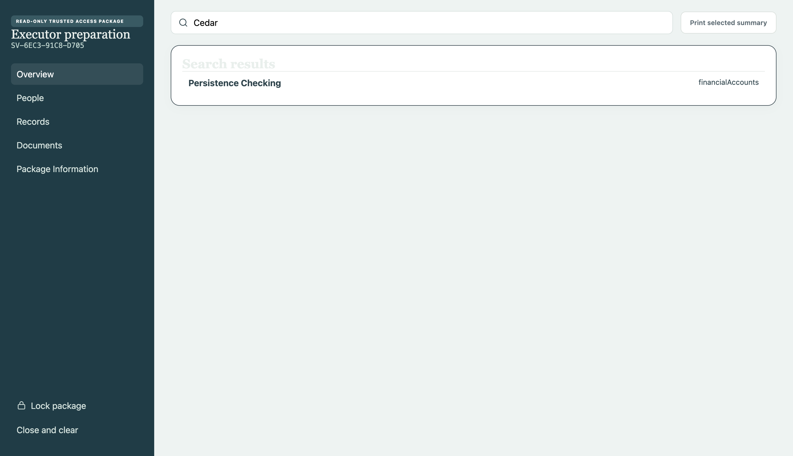

Records
Household records
Keep insurance, property, accounts, contacts, medical coverage, bills, and plans in a consistent structure.
- Linked people and records
- Search, filters, and status tracking
Servara is a private desktop application for maintaining essential records, supporting documents, and continuity plans in one encrypted local vault.
Your private local vault is ready.
12 of 15 organization tasks complete
Designed around a simple principle:
A desktop system for maintaining household records, supporting documents, review dates, controlled access, and encrypted backups.
Keep insurance, property, accounts, contacts, medical coverage, bills, and plans in a consistent structure.
Import supported files into authenticated encrypted storage and preview them without creating an unprotected working copy.
Identify upcoming renewals, incomplete relationships, and records that need to be checked again.
Create a separate read-only package containing only the records and fields selected for a trusted recipient.
Create encrypted backups, verify their contents, and restore through a staged process.
Choose a trusted person, select individual records and fields, preview the result, and protect the package with its own passphrase. The recipient gets a locked, read-only view.

Servara minimizes what it can access, keeps encryption in the desktop process, and does not include advertising, analytics, or remote error-reporting libraries.
 Encrypted vaultOn your device
Encrypted vaultOn your device
Your password derives a key that wraps a separate random data key.
Manual, inactivity, computer-sleep, and operating-system session locks clear decrypted state.
Use authenticator codes, compatible security keys, and one-time recovery codes.
A sandboxed interface receives only the specific operations it needs.
Servara 1.0 is a technical preview. It has extensive automated checks, but has not yet received an independent security audit or code-signing certificate. Review the security overview and installation notes before using the preview.
Read the security overview →Important household information is often scattered across folders, inboxes, devices, and memory. Servara brings those references into one structured desktop vault.
The product combines encrypted persistence, document handling, multi-factor authentication, backups, review workflows, and a deliberately limited sharing format.
Its design follows three constraints: private data stays local, exports are deliberate, and essential information remains understandable when time and attention are limited.
A focused desktop application with defined security boundaries and a complete, repeatable test workflow.
Unit, component, integration, security, performance, development E2E, and packaged macOS E2E checks pass for the current release candidate.
Choose the version for your computer.
For Apple Silicon Macs running a current version of macOS.
Version 1.0.0 · ZIP · 119 MB5959624fc6d5e88fb925389e3cf81b25b2a07f252b62e43d5306edd5dd21aa61
Portable x64 build for modern 64-bit Windows computers.
Version 1.0.0 · ZIP · 148 MB234a2dd6cb96027fc7ee232a562033a0e6a02d02773340097500d943cb2999ae
Review the platform instructions and verify the checksum before opening Servara.
No. The desktop preview is local-first. Optional shared-vault infrastructure is disabled until production services are configured, and Servara includes no analytics or advertising.
No. There is no password-recovery bypass. Keep your password and an independent encrypted backup somewhere safe.
No. Servara organizes references and instructions. It does not store account passwords, execute transfers, create legal authority, or provide legal, financial, tax, medical, or estate-planning advice.
The application and workflows have passed the project’s automated and packaged tests, but public-release work remains: code signing, notarization, native Windows QA, independent reviews, and support infrastructure.
Servara has not completed code signing or independent security review. Keep original documents and current backups, and review the published security overview before deciding whether the preview suits your needs.
SERVARA
Private household organization, built with care and tested from first launch through recovery.
Download Servara